Price ranges, build timelines, and the permit and HOA steps for the projects Austin homeowners ask us about most: decks, cedar privacy fences, pergolas and patio covers, concrete patios, Hardie siding, and roof replacement. Written by John, who builds them. New to the lingo? Start with our plain-English glossary.
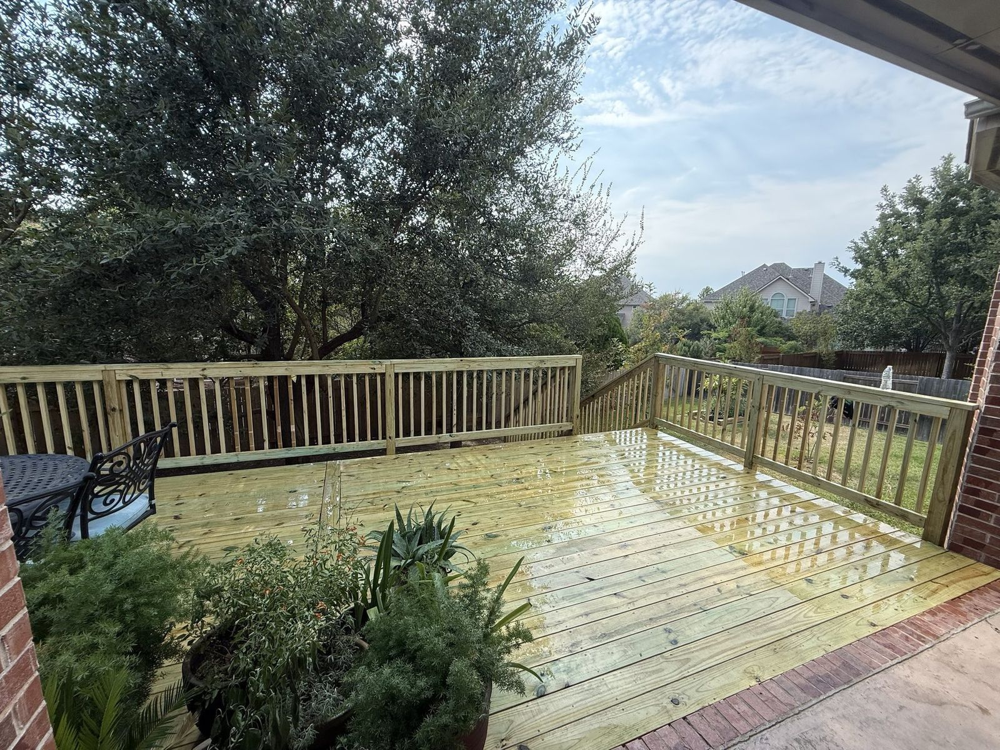
What deck repairs cost in 2026, how to tell a repair from a rebuild, and the most common fixes on Austin decks.

What each costs on a typical Austin home, how long each lasts, hail, insurance discounts, HOA rules and our pick.
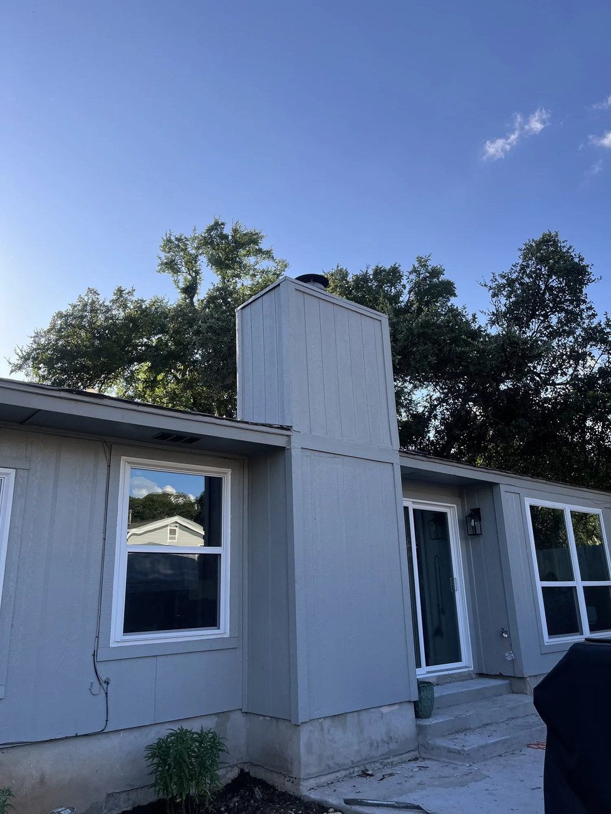
Fiber cement vs engineered wood in Austin: heat, water, hail, fire, warranties, cost and the siding we recommend.
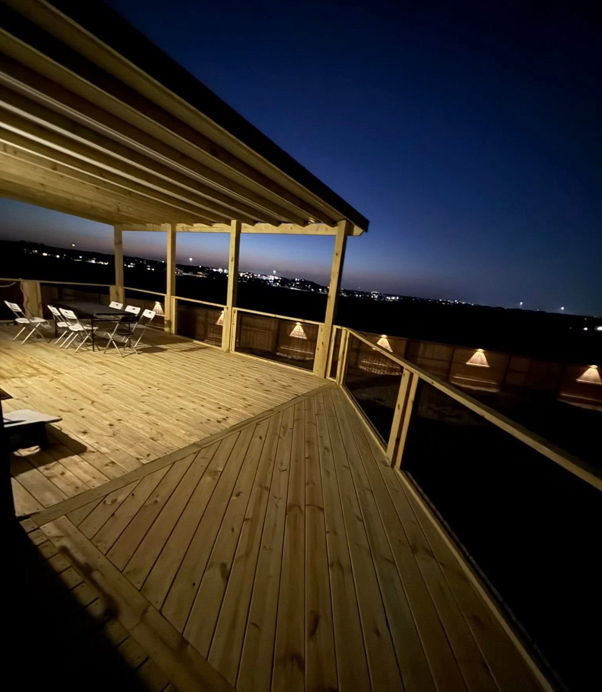
Each brand's lines, composite vs PVC, how hot the boards get in Austin, installed cost by tier, and our pick.
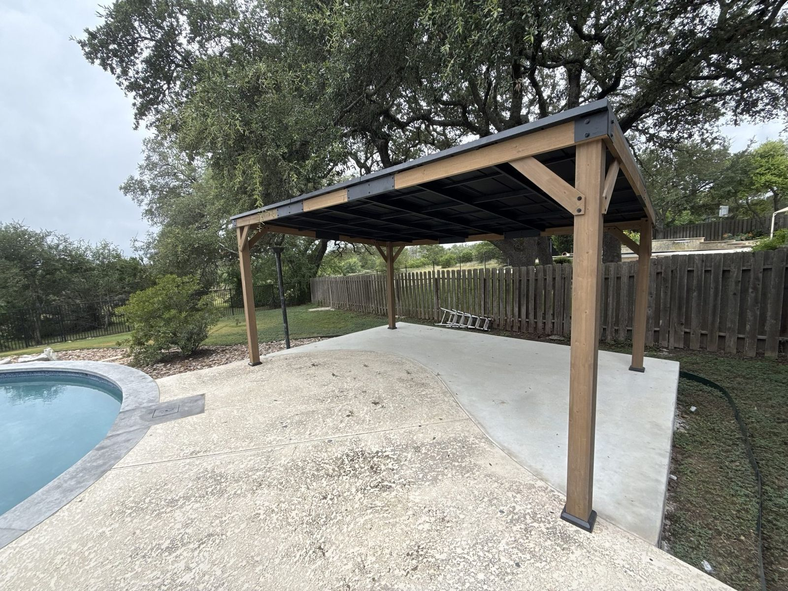
What each one actually is, what it costs around Austin, and which one a Texas backyard really needs.
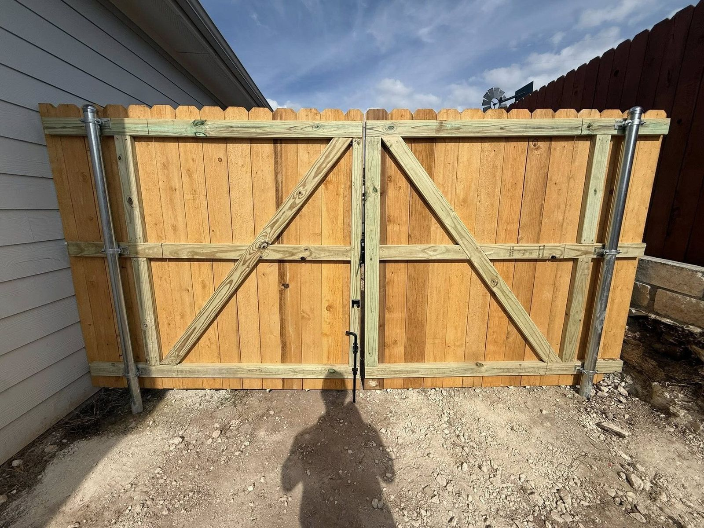
Leaning posts, sagging gates and storm damage: what each repair costs, what causes it, and when to replace instead.
How to read a quote, what to ask before you sign, and the warning signs worth walking away from.
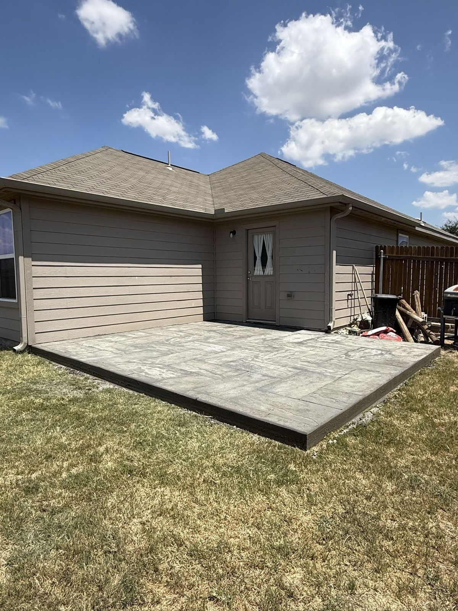
Pricing by material and height, when you need an engineer, and the buried drainage detail that decides whether a wall lasts.

Real 2026 repair pricing, the honest test for when patching stops making sense, and the six things that actually rot siding here.
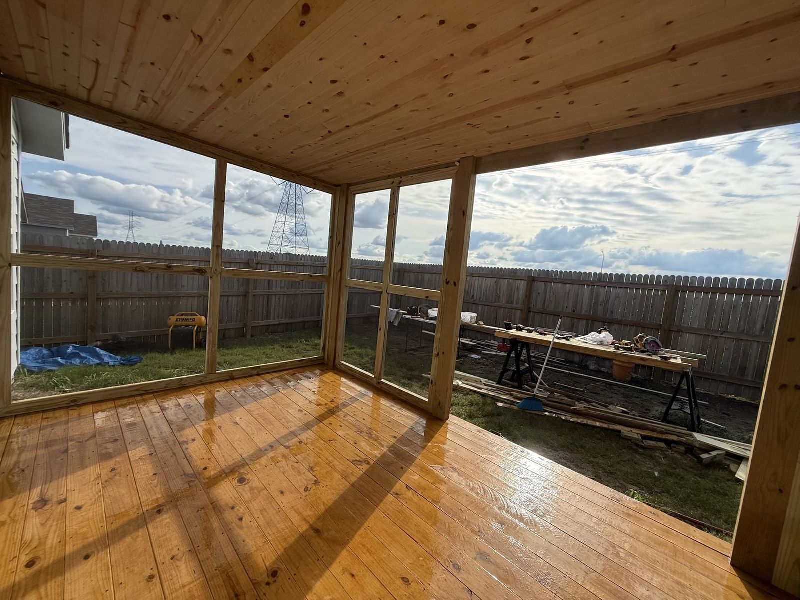
Real 2026 ranges, the honest difference between the two, and why we talk most Austin homeowners out of the sunroom.
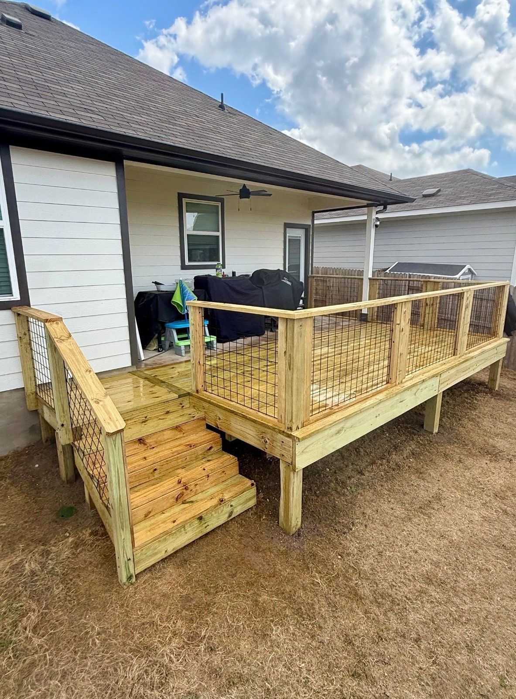
Fall is the best build season here, winter is the most underrated, and spring gets chaotic the moment hail lands. Month by month, plus how far ahead to book.
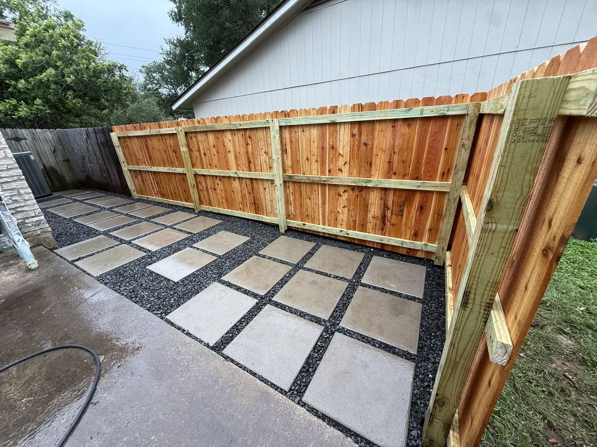
A deck is a floor above the ground, a patio is a floor on it, a pergola is a roof over either. How slope, sun, and soil decide, with cost ranges for all three.
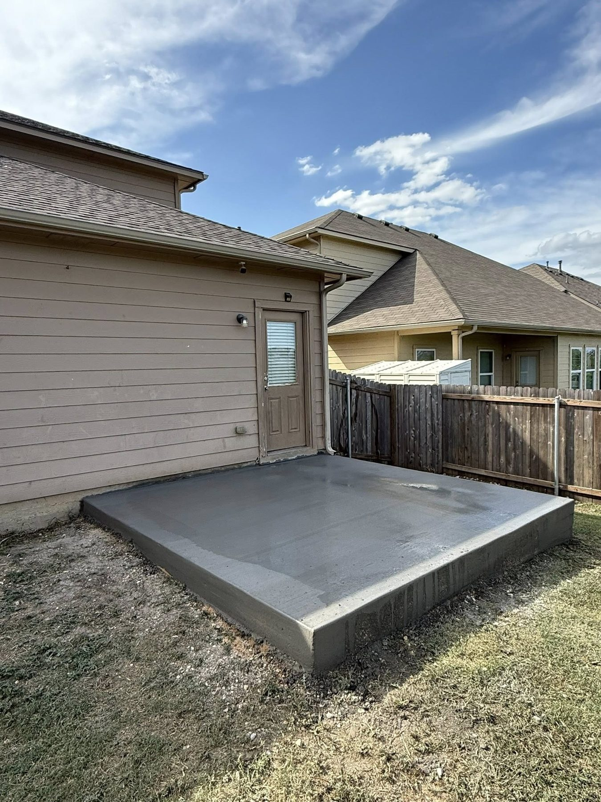
Real numbers for pool decks across concrete, pavers, travertine, and natural stone. What stays cool in Texas heat and what to spend on (vs. skip).
Real numbers across basic grill islands, mid-range kitchens, and premium covered builds. What's worth paying for, what to skip, and where quotes hide the expensive parts.
Real resale numbers on decks, pergolas, and outdoor living in the Austin market. Which materials hold value, what buyers care about, and when to build for max return.
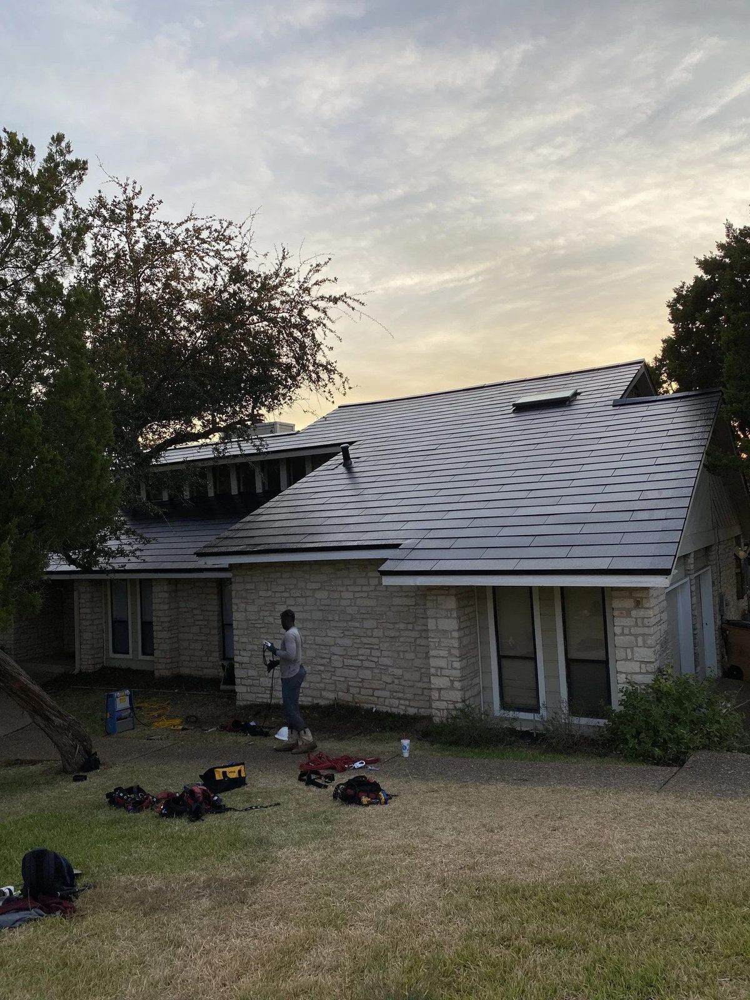
Real 2026 numbers on new roofs in Austin. Architectural shingle, standing seam metal, and synthetic slate ranges, plus how insurance claims actually work.
Real numbers for concrete patios in Austin. Standard, stamped, and stained pricing, plus an honest concrete-vs-pavers-vs-flagstone breakdown.
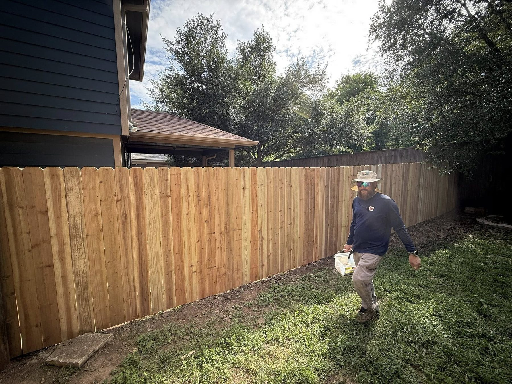
Real per-foot pricing for cedar privacy fences. Side-by-side, board-on-board, horizontal, and shadow-box, plus gates, stains, and what really moves the price.
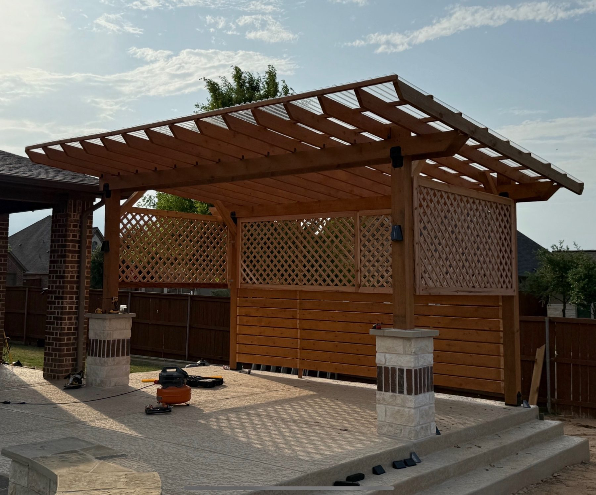
Real 2026 numbers for cedar pergolas and patio covers in greater Austin. Attached vs. freestanding, open-top vs. covered, plus itemized add-on pricing.
Real numbers on Hardie fiber cement siding in Austin. Lap, panel, shake, and trim pricing, plus an honest Hardie vs. vinyl vs. stucco vs. LP comparison.

How architectural review actually works, what your packet needs to include, real timelines, and how a local contractor handles the submission for you.

Real numbers, not "it depends." Pressure-treated, cedar, and composite ranges, what actually drives the price up, and where you can save without cutting corners.
Hail and high winds hit Austin every year. Here is exactly what to look for after a storm, when a repair is enough, and how to handle insurance without losing your mind.
Cedar vs pine, board-on-board vs horizontal, and why the posts matter more than the pickets.
Skip the guesswork. Use the Design Builder to map out exactly what you want, then send it to John for a free, line-itemed quote.